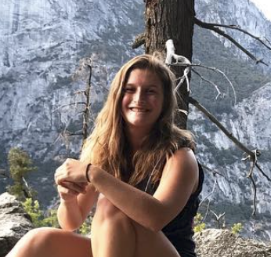
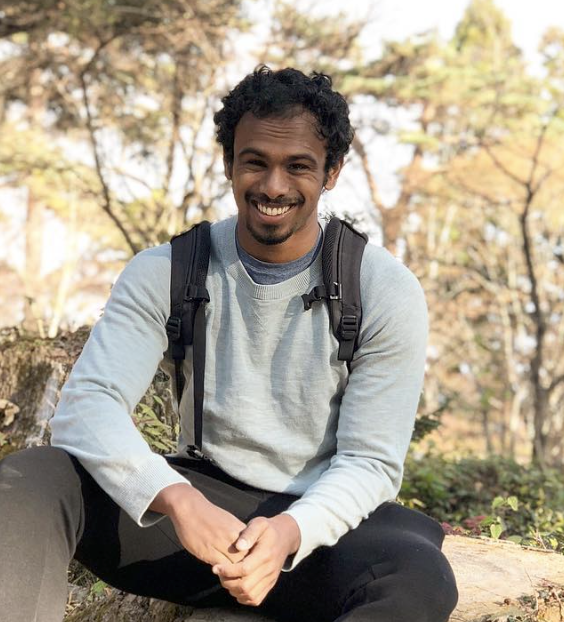
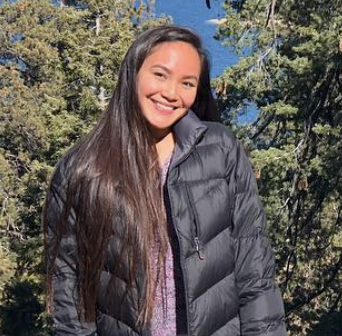
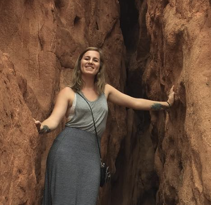

Who are we?
Our Purpose
Our Mission
The Team

Mackenzie Saideman
Mackenzie is our president! She is in Chi Omega and is a senior studying marine biology. She joined ggg to bring environmental awareness to the greek community. As president, she has had the opportunity to lead like-minded individuals to do the same. Her favorite national park is Yosemite and her favorite fish is a mola mola!Amber Fossier
Amber is our VP of Campus Outreach. She is a 4th year human biology major and computer science minor in Alpha Omicron Pi! Growing up in San Francisco, she has always been very environmentally conscious and loves that she can continue that with her friends in the Greek community! One of header favorite places is Tahoe, and loves orcas!

Uday Govindswamy
Uday is our Special Projects Director! He is a senior in Phi Gamma Delta (FIJI) majoring in environmental engineering and minoring in earth sciences. He says “Climate change solutions are in our technology. We need to find potential solutions to reduce the speed that climate change hits us at. Through research, studies, and data analysis we can explore and inspire others in one of the most socially active groups on campus” His favorite national park is Piha in New Zealand and his favorite plant is the ginko biloba!

Dawn
Dawn is our VP of finance and a senior in Kappa Kappa Gamma! She is majoring in Human Biology and she says “Growing up on the island of Guam, I’ve always valued the environment and protecting it. I joined GGG because I want to be able to bring this awareness to my peers. I am literally a koala."
